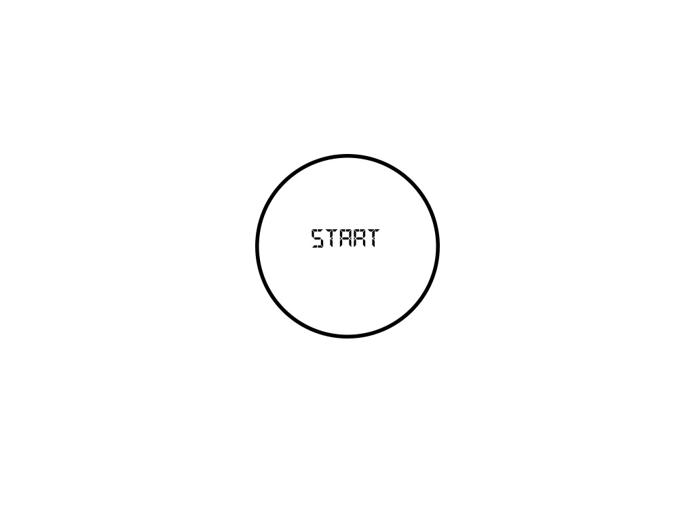
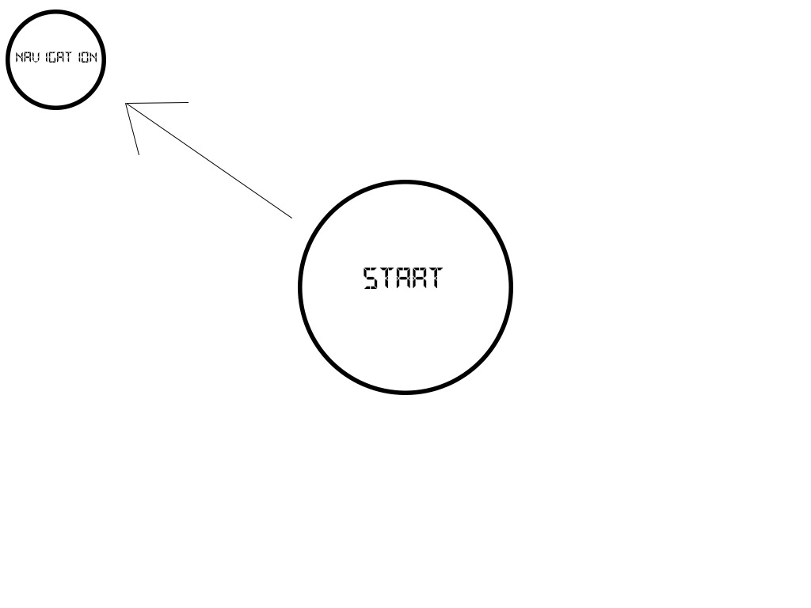

I like the concept of having navigation be a constant availability to the user. Somethign that is constantly visible and easy to access. So having the main navigation of the central hub merely move off to the side and remain available to a lesser extent for the duration of the user's stay on the site is something that either most sites dont have or is implimented in a clunky fashion.
